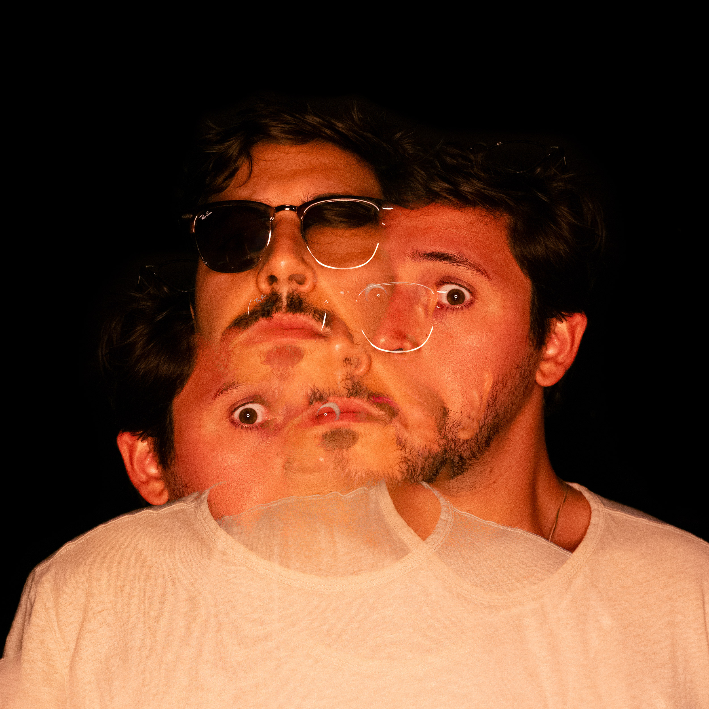
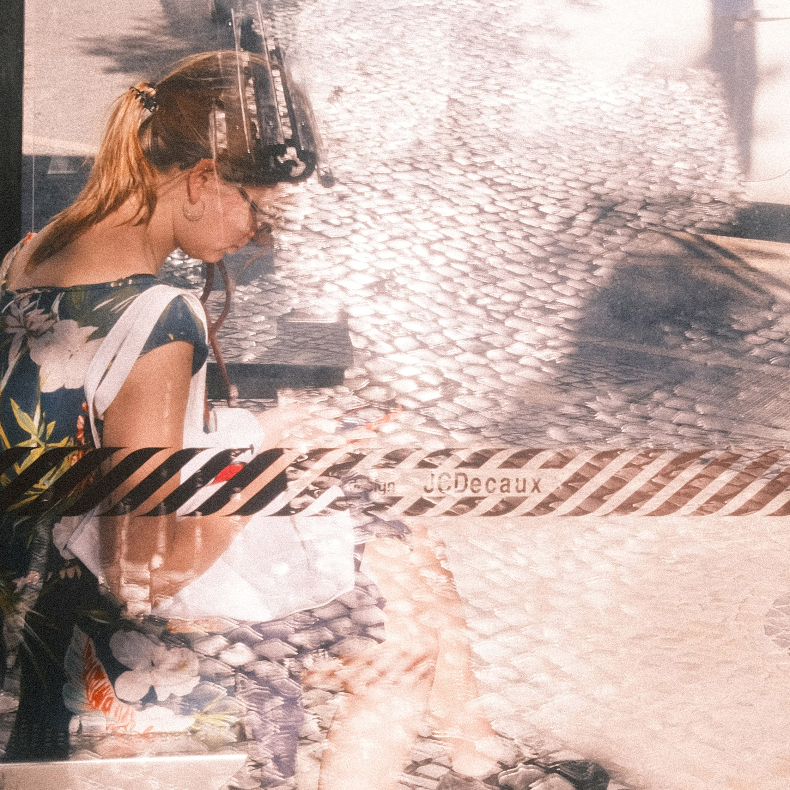

<div class="container-fluid main">

        <div class="row">

                <div class="col-12 col-lg-6 row">

                        <h3 class="sub-title">Team</h3>

                        <div class="col-12 col-md-6">

                                
                                <p class="text last-p">
        
                                        <strong class="simple">Ricardo Santos</strong>, Designer <br>
                                        <span class="mono">ricardo@dat-rs.com</span>
        
                                </p>
        
                        </div>
        
                        <div class="col-12 col-md-6">
        
                                
                                <p class="text last-p">
        
                                        <strong class="simple">Sofia Talefe</strong>, Office Manager <br>
                                        <span class="mono">sofia@dat-rs.com</span>
                                </p>
        
                        </div>

                </div>

                <div class="col-12 col-lg-6">

                        <h3 class="sub-title">About</h3>

                        <p class="text last-p">

                                <strong class="simple">Office Santos</strong> is the independent graphic design and illustration studio of Ricardo Santos. We work in print and digital and our practice ranges from branding
                                projects to illustration, editorial, typography, web design, motion and writing and research. We work with clients big and small on every time zone. You can reach out 24/7 for any
                                inquiries, love letters, hate mail, collabs, and anything and everything in-between. Let’s make cool stuff together!

                        </p>

                </div>
                
                <div class="col-12">

                        <h3 class="sub-title">Selected Clients</h3>

                        <p class="client-list">
                          The&nbsp;New York Times, The&nbsp;New Yorker, Apple, Google, The&nbsp;Guardian, The&nbsp;Washington&nbsp;Post,
                          Microsoft, The&nbsp;Atlantic, Los Angeles Times, The Verge, ProPublica, The Intercept, UCLA Blueprint, Medium, Adobe, Jacobin, Tribune, MIT Technology Review, Wall Street Journal, NBC News, Harvard Business Review,
                          Mother Jones, The Hollywood Reporter, Billboard, Le&nbsp;Monde, Quartz, Facebook Watch, TED, Designer Fund, Estrella Damm
                        </p>

                </div>

                <div class="col-12 col-md-6 col-lg-4">

                        <h3 class="sub-title mb-3">Exhibitions</h3>

                        <p class="top-20 para-text-2 prj-deets-2">
                                <span class="prj-deet"><strong>100% Sardinha</strong></span> Festas de Lisboa, Lisboa, 2019 <br>
                                <span class="prj-deet hanging"><strong>A La Muerte</strong></span> Mexico Design Museum, Mexico City, 2017<br>
                                <span class="prj-deet hanging"><strong>Ciudad Ligera</strong></span> Madrid Gráfica, Madrid, 2017 <br>
                                <span class="prj-deet hanging"><strong>Palavra de Sardinha</strong></span> Festas de Lisboa, Lisboa, 2016 <br>
                        </p>

                </div>

                <div class="col-12 col-md-6 col-lg-4">

                        <h3 class="sub-title  mb-3">Press/Publications</h3>

                        <p class="para-text-2 prj-deets-2">
                                <a class="prj-deet new-link" href="https://www.theguardian.com/artanddesign/2020/dec/20/guardian-illustrations-2020-pandemic-turkey-voting-rights">Our Favorite Illustrations of 2020</a> The Guardian, 2020 <br>

                                <a class="prj-deet new-link hanging" href="https://www.slanted.de/product/slanted-magazine-36-coexist/">Slanted #36 — COEXIST</a> Slanted Publishers, 2020 <br>

                                <a class="prj-deet new-link hanging" href="https://shifter.sapo.pt/2018/06/mundial-selecao-de-cartazes-32-arte-factos/">Around the World Cup in 32 Artifacts</a> Shifter, 2018 <br>

                                <a class="prj-deet new-link hanging" href="https://www.incm.pt/portal/loja_detalhe.jsp?codigo=103330">+500 Sardinhas 2014-2017</a> INCM, Lisbon, 2018 <br>

                        </p>

                </div>


      </div>


</div>
